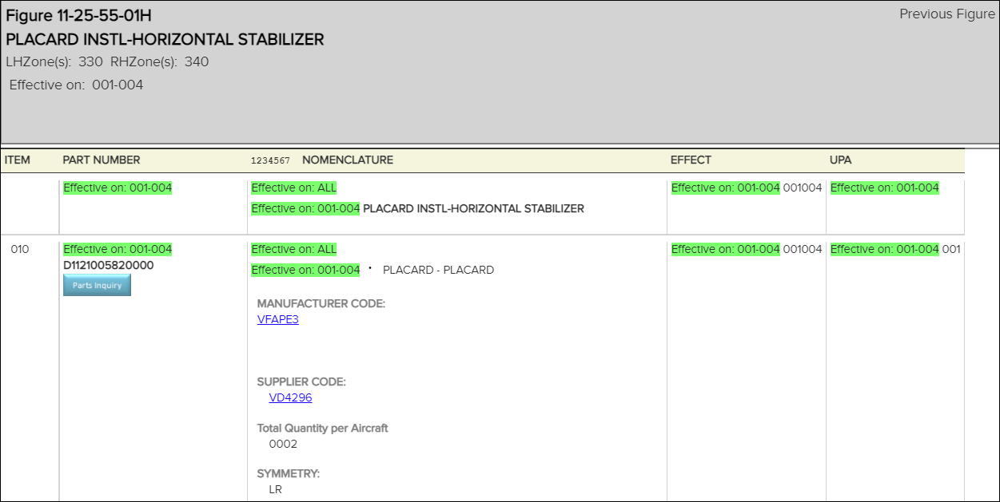

La fonction de demande de pièces vous permet d'effectuer une demande de pièces et de
transmettre les paramètres de la pièce à une application tierce pour votre
organisation.
Remarque : Administrateurs, cette fonctionnalité doit être activée. Reportez-vous au sujet
Enabling Parts Inquiry dans Flatirons Pinpoint Configuration
Guide.
Pour effectuer une demande de pièces, procédez comme suit :
- Dans le volet Librairie, sélectionnez un dossier.
Les
publications appartenant au dossier sélectionné apparaissent sous le nom
du dossier.
- Sélectionnez une publication.
La publication s'affiche dans le volet
Contenu .

- Sélectionnez le bouton sous la partie que vous souhaitez
vérifier.
Remarque : Ce bouton n'apparaît pas pour un numéro de pièce
fabricant (MPN) lorsque la colonne UPA est vide, contient les lettres
REF ou RF, ou toute autre valeur non numérique.
L'application
tierce configurée pour votre organisation s'affiche.
- Vérifiez les informations dans l'application. Par exemple, vous pouvez
vérifier ces éléments:
- Numéro d'article
- Code cage MFG
- Partager la description
- Autres éléments déterminés par votre organisation